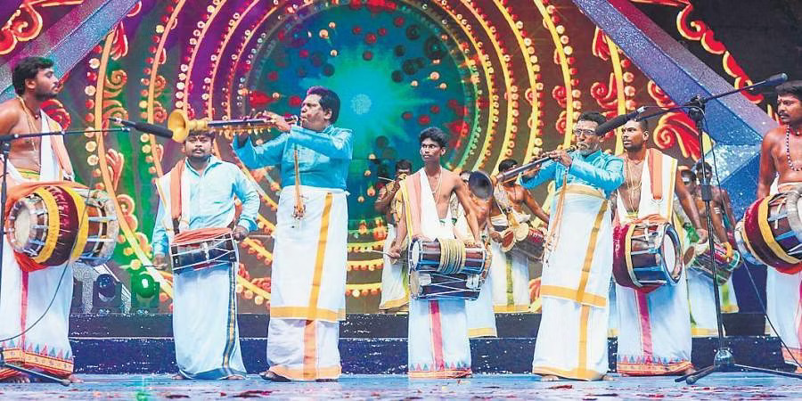

களைகட்டும் கலைத் திருவிழா

தமிழகத்தில் உள்ள பல்வேறு கலை வடிவங்களை அறிமுகப்படுத்தி . மாணவர்களின் கலைத் திறன்களை வெளிகொணரும் விதமாகவும் , பள்ளிக் கல்வி செயல்பாடுகளின் ஒரு பகுதியாக கலை பண்பாட்டு கொண்டாட்டங்களை ஒருங்கிணைப்பதே இத்திட்டத்தின் நோக்கமாகும். இத்திட்டத்தின் மூலம் அரசு நடுநிலை , உயர்நிலை மற்றும் மேல்நிலைப் பள்ளிகளில் 6 முதல் 9 வகுப்புகளில் பயிலும் மாணவர்களுக்கு கலை சார்ந்த பயிற்சிகளும் , 6 முதல் 12 வகுப்புகளில் பயிலும் மாணவர்களுக்கு கலைத் திருவிழா போட்டிகளும் நடத்தப்பட உள்ளது.
மாநிலம் முழுவதும் அரசுப் பள்ளிகளில் நடைபெற்று வரும் கலைத் திருவிழா போட்டிகளில், இன்று வரை சுமார் 25 லட்சம் மாணவர்கள் பங்கு பெற்றுள்ளனர் தமிழ்நாட்டில் பள்ளிக் கல்வித் துறையின்கீழ் இயங்கி வரும் அரசு நடுநிலை, உயர்நிலை மற்றும் மேல்நிலைப் பள்ளிகளில் பயிலும் அனைத்து மாணவ / மாணவிகளும் பங்கேற்கும் வகையிலான கலை நிகழ்ச்சிகள் "கலைத் திருவிழா” என்னும் பெயரில் நடைபெற்று வருகின்றன.
பிரிவு 1 : 6 முதல் 8 ஆம் வகுப்பு பிரிவு 2 : 9 மற்றும் 10 ஆம் வகுப்பு பிரிவு3 : 11 மற்றும் 12 ஆம் வகுப்பு இந்த மூன்று பிரிவில் நடைபெறும் போட்டிகள் பள்ளி நிலையில் தொடங்கி, அடுத்தடுத்த நிலைகளான வட்டார, வருவாய் மாவட்ட மற்றும் மாநில அளவிலான நிலைகளில் நடைபெற்று வருகின்றன. பள்ளி அளவில் நடத்தப்பெறும் போட்டிகளில் முதல் தகுதி பெறும் ஒருவர் / ஒரு குழு மட்டுமே வட்டார அளவில் நடைபெறும் போட்டியில் பங்கு பெறத் தருதி பெறுவர். அதேபோல வட்டார அளவில் நடைபெறும் போட்டிகளில் முதல் இரு தகுதிகளை பெறும் தனிநபர் / குழுக்கள் மட்டுமே மாவட்ட அளவிலான போட்டிகளில் பங்கேற்பர். அதைத் தொடர்ந்து மாவட்ட அளவில் நடைபெபெறும் போட்டிகளில் முதல் தகுதியை பெறும் தனிநபர் / குழு மாநில அளவில் நடைபெறும் போட்டிகளில் பங்கேற்க உள்ளனர். இந்த நிலையில் பள்ளி அளவிலான கலைத் திருவிழா போட்டிகள் தொடங்கி நடைபெற்று வருகின்றன. குறிப்பாக நடனம், கவின் கலைகள், மொழித்திறன், நாடகம், சிற்பம், புகைப்படம் எடுத்தல், கட்டுரை, கவிதை, காண் கலைகள் உள்ளிட்ட பல்வேறு போட்டிகள் நடந்து வருகின்றன. இதில் ஏராளமான மாணவர்கள் ஆர்வத்துடன் பங்குபெற்று வருகின்றனர். இந்த நிலையில் மாநிலம் முழுவதும் அரசு நடுநிலை, உயர்நிலை மற்றும் மேல்நிலைப் பள்ளிகளில் போட்டிகளில் பங்கேற்ற மாணவர்களின் விவரம் வெளியாகி உள்ளது. இதன்படி, பள்ளிக் கல்வித் துறை சார்பில் நடத்தப்படும் அரசுப் பள்ளி மாணவர்கள் 22,65,841 பேர் கலைத் திருவிழாவில் கலந்துகொண்டுள்ளனர். அதேபோல மாநகராட்சிப் பள்ளி மாணவர்கள் 80,798 பேர் பங்குபெற்றுள்ளனர். நகராட்சிப் பள்ளி மாணவர்கள் 88,498 பேரும் ஆதி திராவிட நலப்பள்ளிகளைச் சேர்ந்த 29,546 மாணவர்களும் ஆர்வத்துடன் கலைத் திருவிழாவில் பங்குபெற்று, தங்களின் திறமைகளை வெளிப்படுத்தி வருகின்றனர். இவர்கள் தவிர்த்து வனத்துறை பள்ளிகளில் இருந்து 1,821 மாணவர்களும் மாற்றுத் திறனாளிகள் நலத்துறை பள்ளிகளில் இருந்து 527 மாணவர்களும் கலந்துகொள்கின்றனர். கல்லார் பிசி/ எம்பிசி துறைப் பள்ளிகளில் இருந்து 9,540 மாணவர்களும் பழங்குடியினர் நலப்பள்ளி மாணவர்கள் 10,537 பேரும் கலைத் திருவிழாவில் கலந்துகொள்ள முன்பதிவு செய்து, பங்கு பெற்றுள்ளனர். சமூக பாதுகாப்பு துறைப் பள்ளியில் இருந்து 176 பேரும் கஸ்தூர்பா காந்தி பாலிகா வித்யாலயா (KGBV) பள்ளியில் இருந்து 5696 மாணவர்களும் கலைத் திருவிழாவில் கலந்துகொண்டுள்ளனர். அதேபோல உறைவிடப் பள்ளிகளில் இருந்து 769 மாணவர்கள் கலைத் திருவிழா சார்பில் நடத்தப்படும் பல்வேறு போட்டிகளில் பங்கு பெறுகின்றனர். மொத்தத்தில் 24,94,199 மாணவர்கள் கலைத் திருவிழாவில் பங்குபெற்றுள்ளதாக பள்ளிக் கல்வித்துறை அதிகாரிகள் தெரிவித்தனர்.
நாதசுவரம் (Nadaswaram) என்பது துளைக்கருவி வகையைச் சேர்ந்த ஓர் இசைக்கருவியாகும். இது நாதசுவரம், நாதசுரம், நாகசுரம், நாகஸ்வரம். நாயனம் என்று பலவாறு அழைக்கப்படுவது உண்டு. சிறப்பாகத் தென்னிந்தியா, இலங்கை போன்ற இடங்களிலும், தென்னிந்திய இனத்தவர் வாழும் உலகின் பிற பகுதிகளிலும் இந்த இசைக்கருவி வழக்கில் உள்ளது. திறந்த இடத்தில் இசைப்பதற்கு ஏற்றது. வெகு தூரத்தில் இருந்து கேட்டாலும் இன்பத்தைத் தரும் இயல்பினைக் கொண்டது
தென்னிந்தியாவில் இது ஒரு மங்கலமான இசைக்கருவியாகக் கருதப்படுவதனால், பொதுவாக எல்லாவகையான நன் நிகழ்வுகளிலும் இதற்கு ஒரு இடம் உண்டு. வசதியான பெரிய கோயில்களில் அன்றாடம் இது பல தடவைகள் இசைக்கப்படுவது வழக்கம். ஏனையவற்றில் சிறப்பு வழிபாட்டு நிகழ்வுகளின் போது பயன்படுகின்றது. தவிரவும், தனிப்பட்டவர்களின் திருமணம், பூப்புனித நீராட்டுப் போன்ற நிகழ்ச்சிகளிலும், சமய சார்பற்ற பல பொது நிகழ்வுகளிலும் நாகசுவரம் சிறப்பிடம் பெறுகின்றது. இவ்வாத்தியம் முன்பு தென்னிந்தியாவிலுள்ள நாகூர், நாகபட்டிணம் முதலிய ஊர்களில் உள்ளவர்களான, நாகசர்பத்தைத் தெய்வமாகப் பூசித்த நாகர் என்ற சாதியரினால் வாசிக்கப்பட்டு வந்தது. நாகத்தின் போன்று உருவத்தைப் போன்று நீண்டிருந்ததின் காரணமாகவும் நாதசுவரம் என்னும் ஏற்பட்டது. இதனுடைய இனிமையான நாதம் காரணமாக பிற்காலத்தில் இது நாதஸ்வரம் எனப்பட்டது. பல்லாண்டுகளாக திமிரி என்னும் நாகசுவரமே வாசிக்கப்பட்டது. இதன் நீளம் குறைவாக இருக்கும். இதில் சில மாற்றங்களோடு நாகசுவர மேதை டி. என். ராஜரத்தினம் பிள்ளை அறிமுகப்படுத்தியதுதான் தற்போது புழக்கத்தில் உள்ள பாரி நாகசுவரம் ஆகும். திமிரி நாகசுவரத்தைவிட பாரி நாகசுவரம் நீளமாக இருப்பதுடன், இசைக் கலைஞர்களால் நீண்ட நேரம் வாசிக்க சுருதி அளவுடன் இருப்பது இதன் தனிச்சிறப்பாகும்.
கரகாட்டம் பரணிடப்பட்டது 2021-01-18 at the வந்தவழி இயந்திரம் அல்லது "கராகம்" (கரகம்: 'நீர் பானை' நடனம்) தமிழர்களின் பாரம்பரிய ஆட்டங்களில் ஒன்று. தலையில் கரகம் வைத்து ஆடும் ஆட்டம் இதுவாகும். கரகம் பரணிடப்பட்டது 2021-01-18 at the வந்தவழி இயந்திரம் என்பது ஒரு பானை வடிவ கமண்டலத்தைக் குறிக்கும். சங்க இலக்கியங்களில் கரகாட்டம் குடக்கூட்டம் என்று குறிப்பிடப்பட்டுள்ளது. பல விதங்களில் அலங்கரிக்கப்பட்ட கரகத்தை தலையில் வைத்தபடி, சமநிலை கரகாட்டம் ஆடப்படும். மாரியம்மனைப் புகழ்ந்து பாடிய ஒரு பண்டைய நாட்டுப்புற நடனம். மதுரை, தஞ்சாவூர், திருச்சிராப்பள்ளி, கோயம்புத்தூர், திருநெல்வேலி போன்ற மாவட்டங்களில் கோவில் திருவிழாக்களில் கரகாட்டத்தோடு காவடியாட்டம், பொய்க்கால் குதிரையாட்டம் என பல்வேறு நடனங்கள் நடைபெறும்.
அலங்கரிக்கப்பட்ட செம்பு அல்லது பித்தளை குடத்தைத் தலையில் வைத்துக்கொண்டு நையாண்டி மேள இசைக்கு ஏற்றவாறு குடம் கீழே விழாதவாறு பெண்கள் மற்றும் ஆண்கள் ஆடும் ஆட்டம் கரகாட்டம் எனப்படும். கரகம் என்ற வார்த்தைக்கு கமண்டலம், பூக்குடம், கும்பம், செம்பு, நீர்க்குடம் என்ற பல அர்த்தங்கள் உண்டு. கரகாட்டத்திற்கு 3 கிலோ எடையுள்ள செம்பினுள் 3 அல்லது 4 கிலோ மண்ணோ, அரிசியோ இட்டு ஒரு ரூபா நாணயமும் வைத்து கரகச் செம்பு தயாரிக்கப்படும். கரகம் என்பது விதைப்பாதுகாப்பின் ஓர் அங்கமாகவும் இருந்து வந்திருக்கிறது. கரகத்தின் உள்ளே விதைகளை இட்டு வைத்து, வழிபட்டு, அந்த விதைகளை முளைப்பாரி என அழைக்கப்படும் விதைத்தேர்வு முறைக்கு அனுப்பி வைக்கும் கலாச்சாரம் நீண்ட காலமாக இருந்து வருகிறது. ஒரு விதத்தில் விதைகளை கரகத்தின் வழியாக வழிபடும் முறை என்றும் சொல்ல முடியும். இந்த செம்பின் வாய்ப் பகுதியை தேங்காயால் மூடுவதற்கென்றே கட்டை வைத்திருக்கின்றனர். இதன் பின் டோப்பா எனப்படும் குடையை இதன்மேல் பொருத்தி வைப்பர். குடையின் மேலே கிளி, அன்னம், புறா போன்ற தக்கைப்பறவை உருவம் இருக்கும். தெய்வ வழிபாட்டிற்கு ஆடும் கரகம் "சக்திக்கரகம்' என்றும் தொழில்முறைக் கரகத்தை "ஆட்டக்கரகம்' என்றும் சொல்வர். தோண்டிக்கரகம் என்றால் மண்ணால் செய்யப்படுவது. பித்தளையால் செய்யப்படுவது செம்புக்கரகம் என்றும் அழைக்கப்படும். முன்பு ஆண்கள் பெண் வேடமிட்டு ஆடியதை இன்று பெண்களே ஆடுகின்றனர். இவ்வாட்டத்திற்கு நையாண்டிமேளம், சிறிய உடுக்கை, பெரிய உடுக்கை, சத்துக்குழல், செண்டை, பறை என்பன இசைக்கப்படுகின்றன. நாதஸ்வரத்தில் பாடல் வாசிக்க மேளம் முழங்க அந்த இசைக்கேற்ப கரகாட்டக் கலைஞர்கள் ஆடுவார்கள்.
•சக்தி கரகம் - பக்தி கலந்து கோயில்களில் ஆடப்படுவது. •ஆட்ட கரகம் - பொதுமக்கள் முன் அல்லது பொது நிகழ்வுகளில் ஆடப்படுவது.
நடனம் என்பது பொதுவாகத் தாளத்துக்கும் இசைக்கும் அமைவாக உடலை அசைத்து நிகழ்த்தப்படும் ஒரு கலை வடிவம். இது ஒரு விடயத்தின் வெளிப்பாட்டு வடிவமாகவோ, சமூகத் தொடர்பாடலாகவோ இருக்கலாம். நடனங்கள் சமயச் சார்பு நோக்கங்களுக்காக ஆடப்படுபவையாக அல்லது பிறருக்கு நிகழ்த்திக் காட்டும் ஒன்றாக அமையக்கூடும். மனிதர் தமது எண்ணங்களை மற்றவர்களுடன் பரிமாறிக் கொள்வதற்கான ஒரு தொடர்புமுறை என்றும் நடனங்களைக் கருதுவது உண்டு. தேனீக்கள் போன்ற சில விலங்குகளும் சில வேளைகளில் நடனத்தைப் போன்ற செயல்களில் ஈடுபடுகின்றன. சீருடற்பயிற்சி (Gymnastics), ஒத்திசை நீச்சல் (synchronized swimming), நடனப் பனிச்சறுக்கு (figure skating) போன்ற விளையாட்டுக்கள் நடனத்தையும் தம்முள் அடக்கியவையாக உள்ளன. கட்டா எனப்படும் தற்காப்புக் கலையும் நடனங்களுடன் ஒப்பிடப்படுவது உண்டு. உயிரற்ற பொருட்களின் அசைவுகள் நடனம் எனக் குறிப்பிடப்படுவது இல்லை.
நடனம் என்பது எவ்வெவற்றை உள்ளடக்கியது என்பது குறித்துச் சமூக, பண்பாட்டு, அழகியல், கலை, நெறிமுறைகள் போன்றவற்றின் எல்லைகளுக்குள்ளேயே விளக்கமுடியும். சில நாட்டுப்புற நடனங்கள் பயன்பாட்டுத்தன்மை கொண்ட அசைவுகளை உள்ளடக்கியிருக்க, பலே, பரதநாட்டியம் போன்ற நடனங்கள் பலவகையான கலை நுணுக்கங்களை உட்படுத்தியவையாக உள்ளன. நடனங்கள் எல்லோரும் பங்குகொண்டு ஆடுபவையாக, சமூக நடனங்களாக அல்லது பார்வையாளருக்கு நிகழ்த்திக் காட்டுவனவாக இருக்கலாம். சில வேளைகளில் சடங்குகள் தொடர்பிலும், போட்டியாகவும், பாலுணர்வுத் தூண்டலுக்காகவும் கூட நடனங்கள் ஆடப்படுவது உண்டு. நடன அசைவுகளில் எவ்வித பொருட்பொதிவும் இல்லாமல் இருக்கக்கூடும். சில மேற்கத்திய நாட்டார் நடன அசைவுகளும், பலே போன்ற நடனங்களில் உள்ள அசைவுகளும் இத்தகையவை. ஆனால், பல்வேறு இந்திய நடனங்களிலும், வேறு பல கீழைத்தேச நடனங்களிலும் அசைவுகள் பொருள் பொதிந்தவையாகவும், குறியீட்டுத் தன்மைகளுடன் கூடியவையாகவும் காணப்படுகின்றன. நடனங்களில் எண்ணங்களும் உணர்வுகளும் பொதிந்திருக்கலாம் அல்லது நடனங்களில் அவை வெளிப்படலாம். அத்துடன், பலவகை நடனங்கள் கதை கூறும் பாங்கிலும் அமைவது உண்டு. நடனங்கள் பல்வேறு பாணிகளில் உருவாகியுள்ளன. எனினும் எல்லா நடனங்களுமே தம்முள் சில பொது இயல்புகளைக் கொண்டுள்ளன. நடன அசைவுகளுக்கு ஏற்ப உடல் வளைந்து நெளிந்து கொடுக்கும் தன்மை கொண்டதாக இருப்பது மட்டுமன்றி, உடல் உறுதியும் முக்கியமானது. இதனாலேயே முறைப்படியாக நடனம் ஆடுபவர்கள் நல்ல நீண்டகாலப் பயிற்சி எடுத்துக்கொள்கிறார்கள். நடனங்களை உருவாக்கும் கலை நடன அமைப்பு எனப்படுகிறது.
பறை ஒரு தமிழிசைக் கருவியாகும். இது தோலால் ஆன மேளமாகும். 'பறை' என்ற சொல் பேச்சைக் குறிப்பதாகும். 'பேசு' எனப்பொருள்படும் 'அறை' என்ற சொல்லினின்று 'பறை' தோன்றியது. (நன்னூல் : 458). பேசுவதை இசைக்கவல்ல தாளக் கருவி 'பறை' எனப்பட்டது. பன்னெடுங்கால வரலாற்றைத் தன்னகத்தே கொண்டுள்ள பறை, ஓர் இசைக் கருவி மட்டுமல்ல தொல்குடித் தமிழ்ச் சமூகத்தின் சொத்து, தோலிசைக் கருவிகளின் தாய்.
தமிழினத்தின் தொன்மையான அடையாளம். உழைக்கும் மக்களின் இசைக் களஞ்சியம். தமிழர் வாழ்வியலின் முகம் என வருணிக்கப்படுகிறது. "பறை" என்பது ஓடும் இசையை ஒழுங்கு பெற நிறுத்தி ஓர் அளவோடு சீரோடு, ஒத்த அழகோடு நடக்க, இசைக்கு நடை கற்பிக்கும் கருவி என முனைவர் வளர்மதி தன்னுடைய "பறை' ஆய்வு நூலில் விளக்குகிறார்.